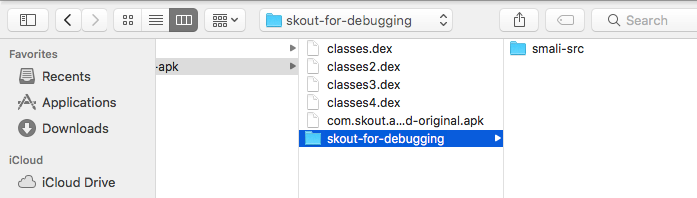
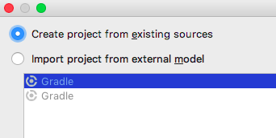
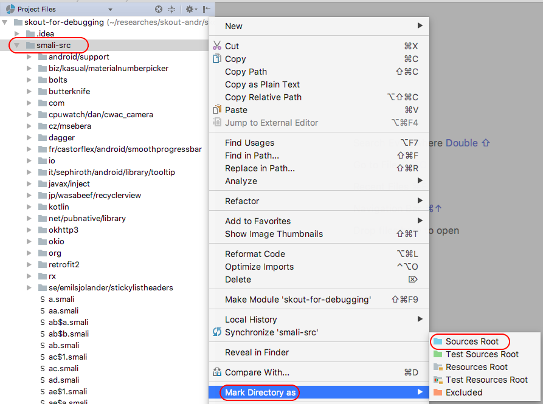
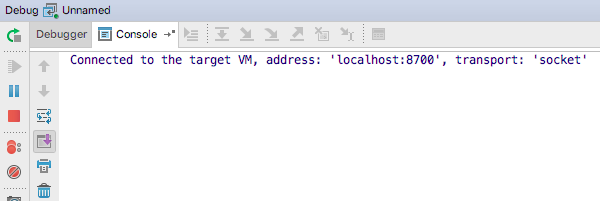
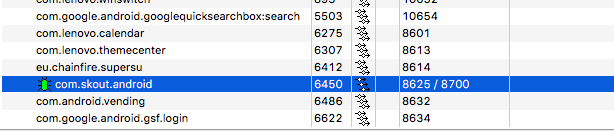

Debugging third-party Android Java code on OS X
There is a very detailed article from @CR0SP about debugging third-party Android Java code on Windows. It’s great and I’d reccomend you to read it first, especially if you use Windows.
In this blog post we are talking about similar things considering specificity of OS X.
Prerequisites
You need a Mac and an Android device with “USB debugging” options enabled. The device may be or may not be rooted, it doesn’t matter.
Preparations
On the Mac,
Install the latest Android Studio. After installation, check Android Studio settings ➡ Appearance & Behavior ➡ System Settings ➡ Android SDK ➡ SDK Tools ➡ Android SDK Platform Tools. The Android SDK Platform Tools must be installed.
Make sure that Android Device Monitor (DDMS) works properly with your Android device. Run
$ ~/Library/Android/sdk/tools/monitorIf it craches with an error or stucks on start, try to downgrade JDK on the Mac (see Tip #1 below for details). On my Mac, running OS X High Sierra 10.13.2, Android Device Monitor works with JDK 1.8.0_141 or lower; it fails with JDK > 1.8.0_141. You can find old JDKs in the Oracle archive (Oracle account may be needed to download).
Also, Android Device Monitor may not work properly because of the Android device you use. E.g. on my Meisu M5c it starts, but doesn’t show apps (“Devices” and “Threads” tabs are empty), probably because of the error
01-21 00:15:46.514: E/DeviceControl(949): can not open /sys/class/meizu/usb_thermal/sync_temp.It’s a device-specific error, at the moment I don’t know how to fix it. So if you face something similar, try another Android device.
Download the latest JAR’s for smali and baksmali and place to any suitable directory. Consider creating shell wrappers (see Tip #2 below for details).
Download the latest smalidea archive and install it to Android Studio (just follow the instruction in “Installation” section).
Install 7zip (install Homebrew and then run
brew install p7zipin OS X Terminal).
No need to prepare your Android device in some special way, just make sure it works with your Android device (see step 2 above).
Tip #1. If you want to remove the current version of JDK, you need to execute
$ /usr/libexec/java_home -V
It will print the JDK’s home directory, e.g.
Matching Java Virtual Machines (1):
9.0.1, x86_64: "Java SE 9.0.1" /Library/Java/JavaVirtualMachines/jdk-9.0.1.jdk/Contents/Home
Remove the JDK home directory (/Library/Java/JavaVirtualMachines/jdk-9.0.1.jdk/ in the example above). If it doesn’t help, also remove
$ sudo rm -rf /Library/PreferencePanes/JavaControlPanel.prefPane
$ sudo rm -rf /Library/Internet\ Plug-Ins/JavaAppletPlugin.plugin
$ sudo rm -rf /Library/LaunchAgents/com.oracle.java.Java-Updater.plist
$ sudo rm -rf /Library/PrivilegedHelperTools/com.oracle.java.JavaUpdateHelper
$ sudo rm -rf /Library/LaunchDaemons/com.oracle.java.Helper-Tool.plist
$ sudo rm -rf /Library/Preferences/com.oracle.java.Helper-Tool.plist
Done. ★
Tip #2. Consider adding the folder where you placed the smali/baksmali JAR’s, to PATH, and creating simple shell script wrappers for the JAR’s. Here is an example for smali-2.2.2.jar:
#!/bin/sh
BASEDIR=$(dirname "$0")
java -jar "$BASEDIR/smali-2.2.2.jar" "$@"
So you just type smali.sh in Terminal, instead of annoying java -jar <path/to/>smali-2.2.2.jar. Anyway, further in the guide, I will use smali.sh and baksmali.sh wrappers for the JAR’s. ★
How to debug APK
For example, let’s debug Java code of Skout:
Get the original APK. For Skout (as well as for any app, installed from Google Play), we can just copy the APK from the Android device with
adb pull:$ adb pull /data/app/com.skout.android-1/base.apk ./ $ mv base.apk com.skout.android-original.apkBaksmali DEX classes from the original APK. Just run on your Mac:
$ mkdir -p skout-for-debugging/smali-src $ 7z e com.skout.android-original.apk classes*.dex $ for c in classes*.dex; do baksmali.sh d $c -o ./skout-for-debugging/smali-src; doneCreate an Anroid Studio project. Run Android Studio and choose in the main menu: “File” ➡ “New” ➡ “Import Project”. Choose the
skout-for-debugging/directory created at the previous step:
Click “Open”. Then choose “Create project from existing sources”:

Click “Next”. On the next step, check if the “Project location” path is correct (it must point to your
skout-for-debugging/directory):
Click “Next”. Wait while Android Studio is inspecting the directory, then make sure that
skout-for-debuggingdirectory is checked:
Click “Next”. Wait while Android Studio is looking for appropriate frameworks (spoiler: it will not find any). Get the message

and click “Finish”. Wait while Android Studio is indexing files, then, in the left panel, choose “Project ➡ Project Files”:

Mark the
skout-for-debugging/smali-src/directory as the sources root:
The Android Studio project created.
Create a remote configuration. In the main menu of Android Studio, click “Run” ➡ “Edit Configurations…” ➡ “+” ➡ “Remote”:

On “Configuration tab”, change “Port” to
8700:
Re-name the configuration, if you want (change the “Name” field). In this example, we will leave it “Unnamed”.
Click “OK”.
It’s time for Android Device Monitor. Connect your Android device to the Mac via USB, run the Skout app on your Android device, run Device Monitor on your Mac, and choose the app on the “Devices” tab:

Run debugging. Switch back to Android Studio. In the main menu, click “Run” ➡ “Debug ‘Unnamed’” (“Unnamed” is the name of the remote configuration ypu created on step 4 above, remember?). As result, Android Studio must say
Connected to the target VM, address: ‘localhost:8700’, transport: ‘socket’
in its console:

Also, the app must be marked with a green bug icon in Android Device Monitor:

Note! Alternatively, you can run Android Monitor before you create the remote configuration, look at the first port number

and use it in the remote configuration instead of 8700. ★
Now you can set breakpoints in Dalvik code, trace Dalvik instructions, inspects registers etc.
Wanna say something?
Commenting is not available in this blog, but you can write me a letter or message.
Prev: Debugging third-party machine code in Android